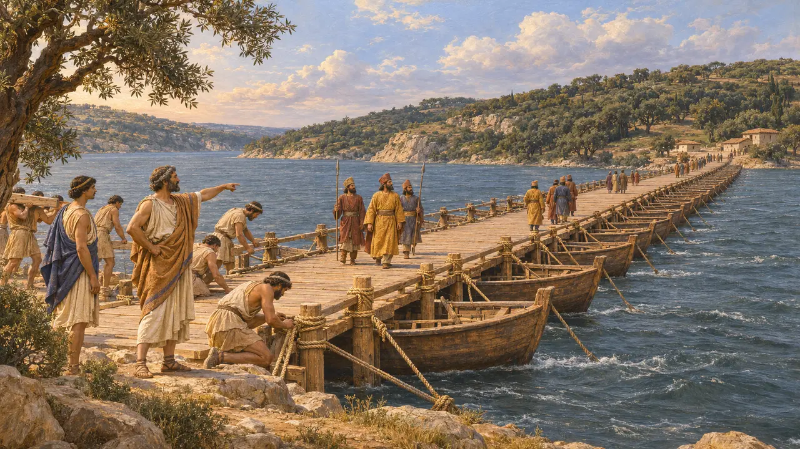
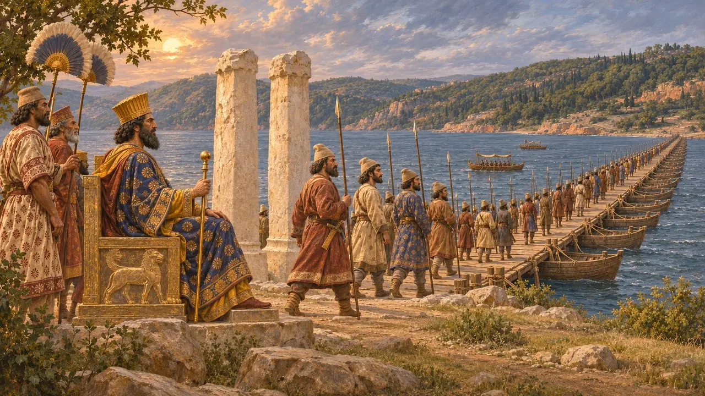
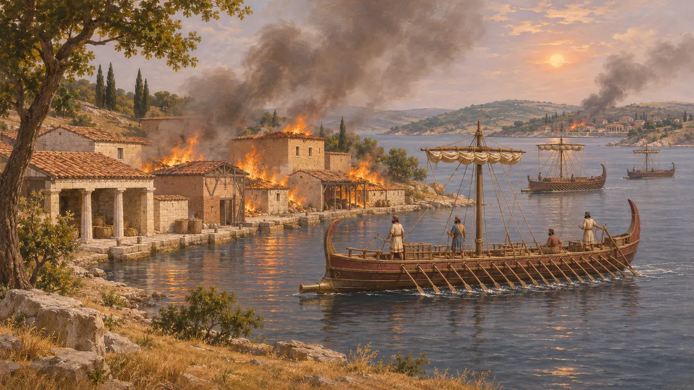
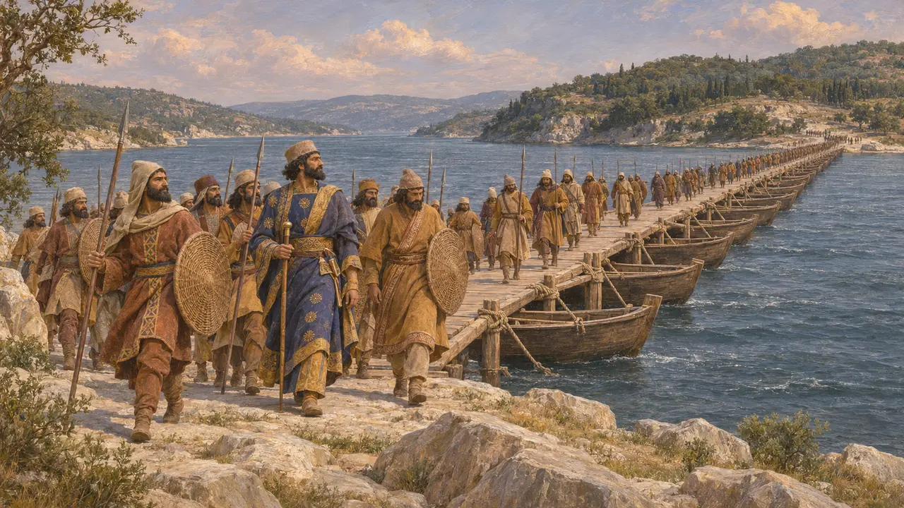

Der Bosporus
Meerenge zwischen Asien und Europa, um 513 v. Chr. für Dareios überbrückt
Im Spiel: Level 6: Die Schiffbrücke
Der Bosporus ist die schmale, etwa 30 Kilometer lange Meerenge, die das Schwarze Meer mit dem Marmarameer verbindet und Asien von Europa trennt, mit Chalkedon am asiatischen und Byzantion am europäischen Ufer. Um 513 v. Chr. ließ Dareios ihn mit Booten überbrücken, damit sein Heer gegen die Skythen nach Thrakien übersetzen konnte. Es war das erste Mal, dass ein persischer König ein Heer nach Europa führte.
Im Spiel: Das Spiel nennt den Bosporus in seiner Chronik und verweist auf die Schiffbrücke des Mandrokles für den Skythenzug des Dareios um 513 v. Chr., nach Herodot 4.85-88. Die Jahreszahl ist eine moderne Schätzung; Herodot nennt keine.

Mandrokles baut die Brücke
Antiker BerichtHerodot berichtet, Dareios sei von Susa nach Chalkedon gezogen, zum Heiligtum an der nördlichen Mündung der Meerenge gesegelt, um das Schwarze Meer zu betrachten, und habe dann auf einer Schiffbrücke übergesetzt, die Mandrokles von Samos entworfen hatte. Nach Herodots eigener Vermutung lag die Brücke etwa in der Mitte zwischen Byzantion und jenem Heiligtum. Die moderne Forschung verortet sie meist nahe der engsten Stelle, wo die Meerenge deutlich weniger als einen Kilometer breit ist. Dareios, so fügt Herodot hinzu, belohnte Mandrokles großzügig.
Herodotus 4.85, 4.87-88

Ein Gemälde und zwei Säulen
Antiker BerichtMit einem Teil seiner Belohnung ließ Mandrokles ein Gemälde des Übergangs anfertigen, das Dareios thronend zeigt, während sein Heer hinüberzieht, und weihte es im Heratempel auf Samos mit Versen, die ihn selbst nennen. Herodot fügt hinzu, Dareios habe an der Meerenge zwei Säulen aus weißem Stein errichtet, eine mit assyrischen und eine mit griechischen Buchstaben, auf denen die Völker seines Heeres verzeichnet waren. Er beziffert dieses Heer auf 700.000 Mann und 600 Schiffe, Zahlen, die Historiker für stark übertrieben halten.
Herodotus 4.87-88

Byzantion und Chalkedon unter persischer Herrschaft
Antiker BerichtLaut Herodot nahm der Feldherr Otanes nach dem Skythenfeldzug Byzantion und Chalkedon ein. Byzantion schloss sich um 498 v. Chr. dem Ionischen Aufstand an. Nach der Niederlage der Ionier bei Lade 494 v. Chr. flohen die Bewohner beider Städte nach Mesambria am Schwarzen Meer, und um 493 v. Chr. brannte die phönizische Flotte ihr verlassenes Land nieder. Thukydides berichtet, dass der Spartaner Pausanias 478 v. Chr. Byzantion den Persern entriss.
Herodotus 5.26, 5.103, 6.33; Thucydides 1.94

Zeitpunkt und Ausgang des Übergangs
UmstrittenHerodot nennt kein Jahr. Die meisten Historiker datieren den Übergang auf etwa 513 v. Chr. oder 512 v. Chr., einige haben jedoch für einen früheren Zeitpunkt in den 510 v. Chr.er-Jahren plädiert. Dareios' eigene Inschriften beschreiben keinen Feldzug in Europa, doch die Länderliste an seinem Grab in Naqsch-e Rostam nennt Skudra, das meist mit Thrakien gleichgesetzt wird, sowie Saken, die jenseits des Meeres leben. Herodot schildert den Skythenfeldzug als Fehlschlag; viele Historiker meinen, dass Dareios zumindest Thrakien und die Meerengen sicherte.
DNa; Herodotus, book 4; P. Briant, From Cyrus to Alexander, 2002
Die Furt der Kuh
Spätere LegendeGriechische Schriftsteller deuteten den Namen Bosporus als „Kuhfurt“, nach dem Mythos von Io, der Geliebten des Zeus, die in eine Färse verwandelt und von einer von Hera gesandten Bremse über das Meer getrieben wurde. Im „Gefesselten Prometheus“ gibt Aischylos den Namen dem Kimmerischen Bosporus an der Mündung des Asowschen Meeres, während der spätere Mythograph Apollodor ihn mit dieser thrakischen Meerenge verbindet. Die Erzählung ist Mythos und sagt nichts über die persische Nutzung der Meerenge aus.
Aeschylus, Prometheus Bound; Apollodorus, Library 2.1.3
Quellen
- Herodotus, Histories, books 4-6
- DNa
- P. Briant, From Cyrus to Alexander, 2002
- Thucydides 1.94
- Aeschylus, Prometheus Bound
- Apollodorus, Library 2.1.3